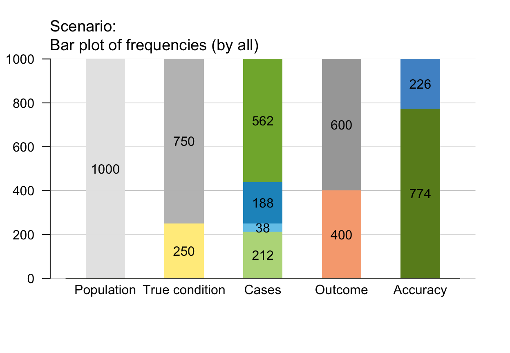
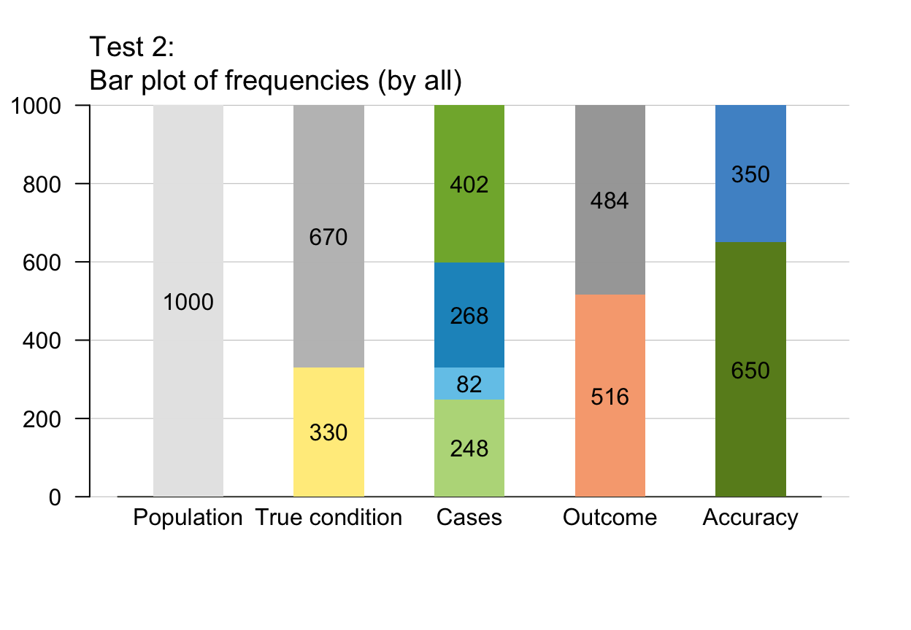
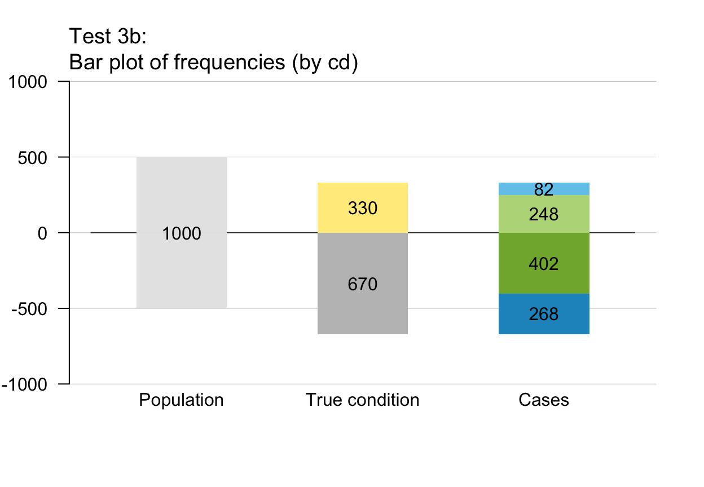
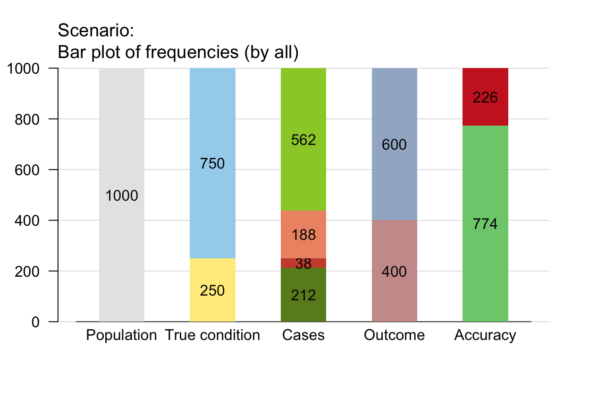
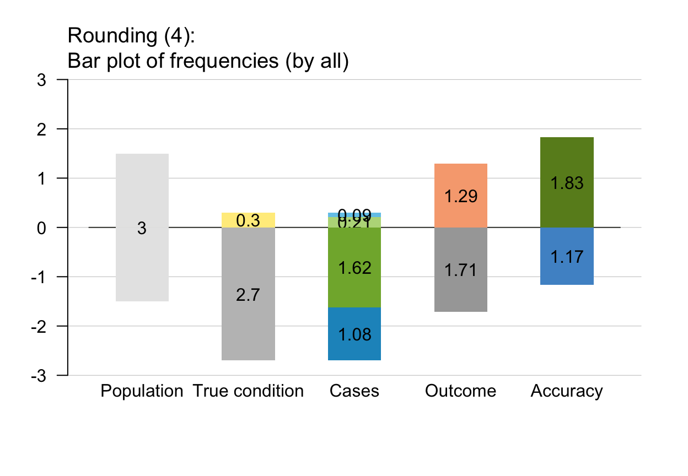
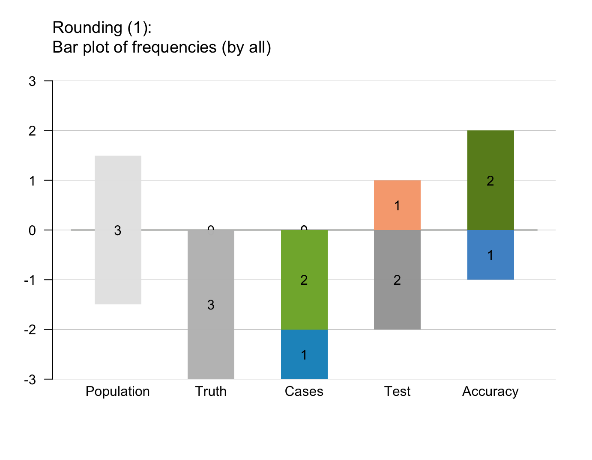

plot_bar draws bar charts that
represent the proportions of frequencies in the current
population popu as relatives sizes of
rectangular areas.
plot_bar(prev = num$prev, sens = num$sens, mirt = NA, spec = num$spec, fart = NA, N = num$N, by = "all", dir = 1, scale = "f", round = TRUE, f_lbl = "num", f_lwd = 1, lty = 0, lbl_txt = txt, title_lbl = txt$scen_lbl, col_pal = pal, mar_notes = TRUE, ...)
Arguments
| prev | The condition's prevalence |
|---|---|
| sens | The decision's sensitivity |
| mirt | The decision's miss rate |
| spec | The decision's specificity value |
| fart | The decision's false alarm rate |
| N | The number of individuals in the population.
(This value is not represented in the plot,
but used when new frequency information |
| by | A character code specifying the perspective (or the dimension by which the population is split into 2 subsets) with the following options:
|
| dir | Number of directions in which bars are plotted. Options:
|
| scale | Scale the heights of bars either
by current frequencies ( |
| round | Boolean option specifying whether computed frequencies
are to be rounded to integers.
Default: |
| f_lbl | Type of frequency labels, as character code with the following options:
|
| f_lwd | Line width of frequency box (border).
Values of |
| lty | Line type of frequency box (border).
Values of |
| lbl_txt | Current text information (for labels, titles, etc.).
Default: |
| title_lbl | Text label for current plot title.
Default: |
| col_pal | Current color palette.
Default: |
| mar_notes | Boolean option for showing margin notes.
Default: |
| ... | Other (graphical) parameters
(e.g., |
Details
If a sufficient and valid set of 3 essential probabilities
(prev, and
sens or its complement mirt, and
spec or its complement fart)
is provided, new frequency information freq
and a new population table popu
are computed from scratch. Otherwise, the existing
population popu is shown.
By default, plot_bar uses current frequencies
(i.e., rounded or not rounded, depending on the value of round)
as bar heights, rather than using exact probabilities to
scale bar heights (i.e., default scaling is scale = "f").
Using the option scale = "p" scales bar heights
by probabilities (e.g., showing bars for non-natural frequencies
even when frequencies are rounded).
When round = FALSE, bar heights for scale = "f"
and for scale = "p" are identical.
The distinction between scale = "f" and
scale = "p" matters mostly for
small populations sizes N
(e.g., when N < 100).
For rounded and small frequency values (e.g., freq < 10)
switching from scale = "f" to scale = "p"
yields different plots.
plot_bar contrasts compound frequencies along 1 dimension (height).
See plot_mosaic for 2-dimensional visualizations (as areas)
and various box) options in
plot_tree and plot_fnet
for related functions.
See also
comp_popu computes the current population;
popu contains the current population;
comp_freq computes current frequency information;
freq contains current frequency information;
num for basic numeric parameters;
txt for current text settings;
pal for current color settings
Other visualization functions: plot.riskyr,
plot_area, plot_curve,
plot_fnet, plot_icons,
plot_mosaic, plot_plane,
plot_prism, plot_tab,
plot_tree
Examples
# Basics: plot_bar(prev = .33, sens = .75, spec = .66, title_lbl = "Test 1")plot_bar(N = 1000, prev = .33, sens = .75, spec = .60, title_lbl = "Test 2") # by "all" (default)# Perspectives (by): plot_bar(N = 1000, prev = .33, sens = .75, spec = .60, by = "cd", title_lbl = "Test 3a") # by conditionplot_bar(N = 1000, prev = .33, sens = .75, spec = .60, by = "cd", dir = 2, title_lbl = "Test 3b", f_lbl = "num") # bi-directionalplot_bar(N = 1000, prev = .33, sens = .75, spec = .60, by = "dc", title_lbl = "Test 4a") # by decisionplot_bar(N = 1000, prev = .33, sens = .75, spec = .60, by = "dc", dir = 2, title_lbl = "Test 4b", f_lbl = "num") # bi-directionalplot_bar(N = 1000, prev = .33, sens = .75, spec = .60, by = "ac", title_lbl = "Test 5a") # by accuracyplot_bar(N = 1000, prev = .33, sens = .75, spec = .60, by = "ac", dir = 2, title_lbl = "Test 5b", f_lbl = "num") # bi-directional# Customize colors and text: plot_bar(dir = 1, f_lbl = "num", col_pal = pal_org)plot_bar(dir = 2, f_lbl = "nam", col_pal = pal_mod)# Frequency labels (f_lbl): plot_bar(f_lbl = "def") # default labels: name = numplot_bar(f_lbl = "nam") # name onlyplot_bar(f_lbl = "num") # numeric value onlyplot_bar(f_lbl = "abb") # abbreviated nameplot_bar(f_lbl = NA) # no labels (NA/NULL/"no")# Scaling and rounding effects: plot_bar(N = 3, prev = .1, sens = .7, spec = .6, dir = 2, scale = "f", round = TRUE, title_lbl = "Rounding (1)") # => Scale by freq and round freq.plot_bar(N = 3, prev = .1, sens = .7, spec = .6, dir = 2, scale = "p", round = TRUE, title_lbl = "Rounding (2)") # => Scale by prob and round freq.plot_bar(N = 3, prev = .1, sens = .7, spec = .6, dir = 2, scale = "f", round = FALSE, title_lbl = "Rounding (3)") # => Scale by freq and do NOT round freq.plot_bar(N = 3, prev = .1, sens = .7, spec = .6, dir = 2, scale = "p", round = FALSE, title_lbl = "Rounding (4)") # => Scale by prob and do NOT round freq.